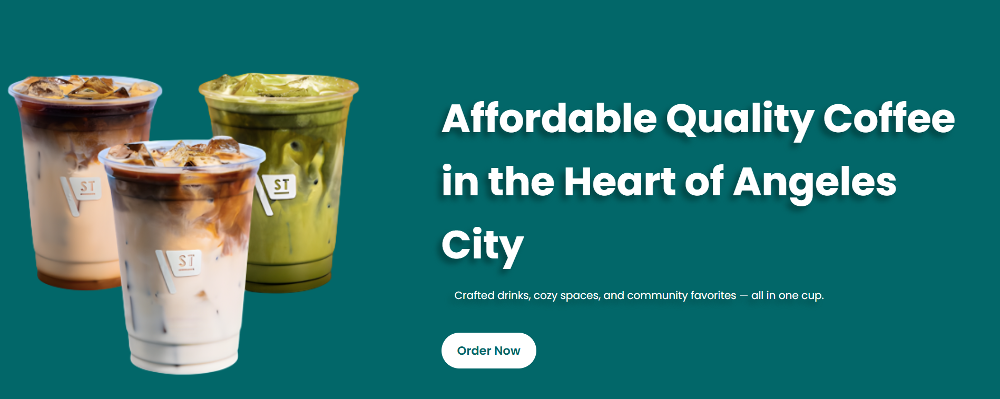
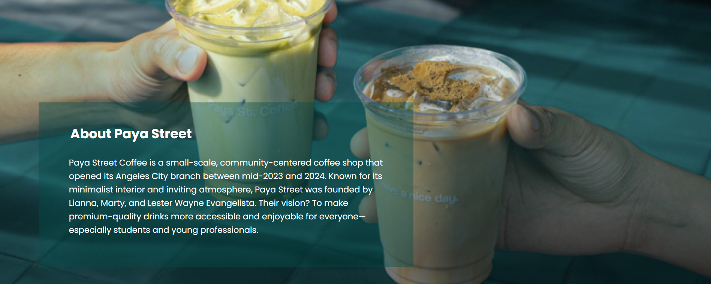

The Objective
Paya Street Café is a responsive web platform designed to bring the local café experience online. The goal was to create a seamless digital storefront where customers can explore the menu, discover new seasonal offerings like the "Crozza," and connect with the brand's social community.
The system prioritizes high-impact visuals and rapid access to location data and menu items to drive foot traffic to physical branches in Orchard, New Point, and SM Clark.
System Architecture
Centralized API
Custom Node.js/Express backend providing high-performance REST endpoints for menu data and customer inquiries.
Branch Intelligence
Integrated location mapping to drive foot traffic toward physical branches in SM Clark, New Point, and Mexico.
Social Ecosystem
Seamless bridge between the web platform and social channels (TikTok/IG) to boost community engagement and reach.
Data Persistence
Optimized JSON-based storage for rapid retrieval of product lists, branch details, and customer messages.
Growth Insights
Integration of GA4 and engagement tracking to monitor campaign performance and user flow through the landing pages.